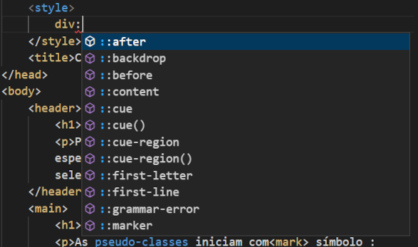
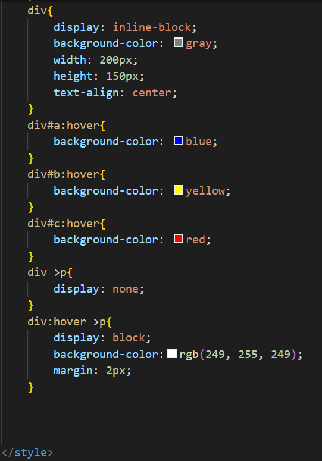

Pseudo-classes
As pseudo-classes iniciam com símbolo : (dois pontos) e geralmente são aplicadas a algum seletor CSS mais simples, como um seletor de classe ou um seletor de tag, permitindo formatações mais específicas de acordo com o estado do elemento.
Existem diversos tipos de pseudo-classes, como as listadas abaixo:
- :focus – representa um elemento que possui o foco, o que pode ocorrer quando o usuário seleciona o elemento através do teclado ou mouse.
- :hover – representa um elemento sobre o qual o mouse está se movendo.
- :checked – é utilizada para selecionar um elemento radio, checkbox ou option que esteja marcado ou com estado ligado.
- :required – representa qualquer input, select, ou textarea que possua o atributo required.
- :first-child – seleciona qualquer elemento que seja o primeiro filho da tag a qual essa pseudo-classe é aplicada.
- :nth-child(x) – seleciona qualquer elemento que seja o filho de numero x da tag onde se aplica esta pseudo-classe.
- :fullscreen – representa os elementos que estão atualmente no modo tela-cheia.
O que são pseudoclasses?
Uma pseudo-classe é usada para definir um estado especial de um elemento.
Por exemplo, pode ser usado para:
- Estilizar um elemento quando um usuário passa o mouse sobre ele
- Estilize links visitados e não visitados de maneira diferente
- Estilize um elemento quando ele estiver em foco
Exemplo de Pseudo-classes
Passe o mouse em cima dos blocos
Teste 01
Texto oculto
Teste 02
Texto oculto
Teste 03
Texto Oculto
Print desse pseudo:
